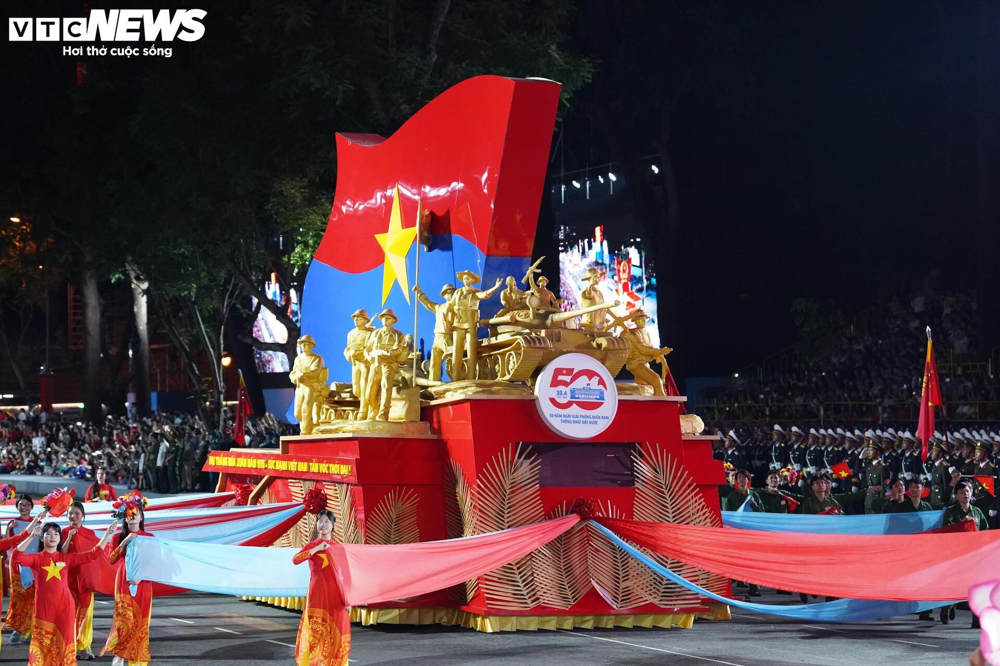

Chương 1
Dấu ấn lịch sử 30/04/1975
Dấu ấn lịch sử 30/04/1975
Chương 2
Lễ kỷ niệm 50 năm 30/04/2025
Lễ kỷ niệm 50 năm 30/04/2025
Chương 3
Chuỗi hoạt động chào mừng
Chuỗi hoạt động chào mừng
Chương 4
Cảm nhận và hồi ức
Cảm nhận và hồi ức
Lễ diễu binh, diễu hành 30/4: Quân đội Nhân dân Việt Nam - Những bước chân hào hùng
Các khối tham gia diễu binh, diễu hành

Xe rước chân dung Chủ tịch Hồ Chí Minh

Xe mô hình biểu tượng 50 năm Giải phóng miền Nam
Khối cờ Đảng, cờ Tổ quốc

Khối Quân kỳ

Khối sĩ quan đại diện năm cánh quân

Khối nữ Quân nhạc

Khối Chiến sĩ Giải phóng quân

Khối Sĩ quan Lục quân
Khối Sĩ quan Hải quân nhân dân Việt Nam

Khối Sĩ quan Phòng không - Không quân
Khối Sĩ quan Biên phòng

Khối Sĩ quan Cảnh sát biển Việt Nam
Hình ảnh về các đồng chí lãnh đạo, nguyên lãnh đạo Đảng và Nhà nước, đại biểu đến dự
Tổng Bí thư Tô Lâm và Thủ tướng Phạm Minh Chính
Đại tướng Lương Cường, Ủy viên Bộ Chính trị, Chủ tịch nước, cùng các đồng chí lãnh đạo, nguyên lãnh đạo Đảng, Nhà nước và lãnh đạo nước ngoài tham dự buổi lễ.
Chủ tịch Quốc hội Trần Thanh Mẫn.

Nguyên Chủ tịch Quốc hội Nguyễn Thị Kim Ngân và nguyên Chủ tịch Quốc hội Nguyễn Văn An.
Các hình ảnh đẹp về buổi lễ


✖